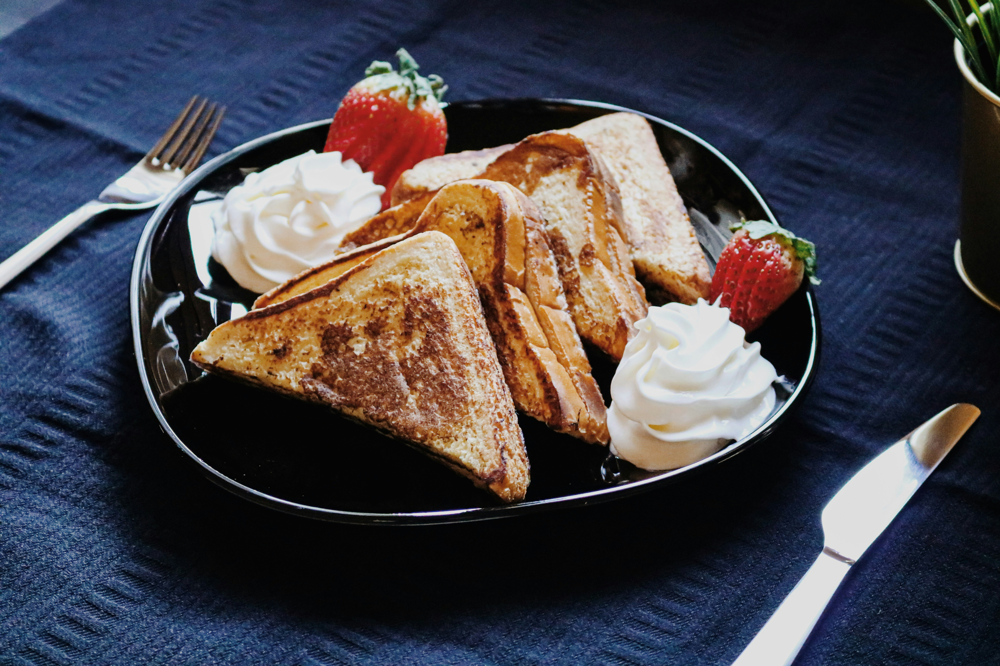
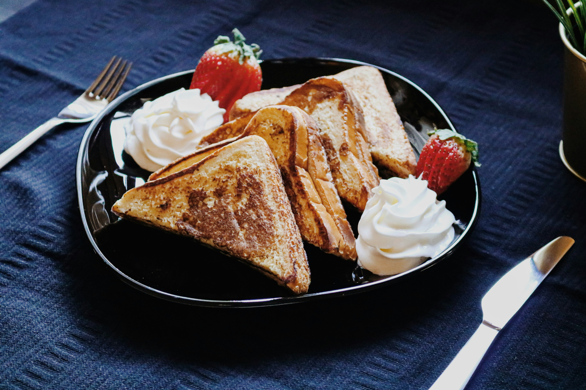

Sweet Breakfast Foods

 


Sweet breakfast foods are the perfect way to start the day, offering a warm and comforting treat to satisfy your morning cravings.
- Pancakes: Fluffy and golden, pancakes are a classic breakfast favorite that can be topped with syrup, butter, and a variety of fruits.
- Waffles: Crispy on the outside and soft on the inside, waffles are delicious with a dusting of powdered sugar or drizzled with syrup.
- French Toast: Soft, buttery, and lightly spiced, French toast is a comforting breakfast dish that pairs beautifully with fresh berries or syrup.
- Pastries: Buttery and flaky, pastries like croissants or danishes make for a perfect indulgence with your morning coffee or tea.
Sweet breakfast foods offer a warm, comforting way to start the day, from fluffy pancakes to flaky pastries. These treats can be customized with various toppings and flavors, making them perfect for any morning craving.